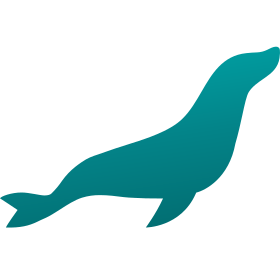

Habilidades:
-

HTML 5
-

CSS
-

JavaScript
-

Python
-

MariaDB
Sou um desenvolvedor Front-end dedicado por transformar ideias em experiências digitais atraentes, funcionais e intuitivas.Trabalho principalmente com HTML, CSS e JavaScript puro, construindo interfaces que prezam pela usabilidade, acessibilidade e performance em diferentes dispositivos.
Ao longo da minha trajetória, desenvolvi diversos projetos, desde portfólios pessoais até sites institucionais, sempre focando em um código limpo,organizado e escalável. Busco estar atualizado com as melhores práticas do mercado e aprimorar constantemente minhas habilidades, pois acredito que o aprendizado contínuo é fundamental para a evolução na área de tecnologia.
Tenho facilidade para trabalhar tanto de forma independente quanto em equipe, valorizando a comunicação clara e o planejamento detalhado para alcançar
resultados de alta qualidade.
Minha atenção aos detalhes e meu comprometimento com os prazos garantem entregas consistentes que atendem ou superam as expectativas dos clientes.
Além do desenvolvimento, sou uma pessoa criativa e curiosa. Fora do ambiente digital, gosto de desenhar, o que me ajuda a exercitar minha criatividade e a manter a mente aberta para novas ideias e soluções inovadoras. Essa combinação entre técnica e criatividade me permite contribuir para projetos que não só funcionam bem, mas também encantam visualmente.
Estou sempre em busca de novos desafios que me permitam crescer profissionalmente e fazer a diferença, entregando soluções digitais que agreguem valor real e proporcionem experiências memoráveis para os usuários.
Currículo
HTML 5
CSS
JavaScript
Python
MariaDB
𝙀𝙢 𝙖𝙣𝙙𝙖𝙢𝙚𝙣𝙩𝙤 - 𝙀𝙣𝙞𝙖𝙘
𝘾𝙤𝙣𝙘𝙡𝙪í𝙙𝙤 - 𝘼𝙡𝙪𝙧𝙖
𝘾𝙤𝙣𝙘𝙡𝙪í𝙙𝙤 - 𝘼𝙡𝙪𝙧𝙖
Permite que o usuário realize operações matemáticas simples, como adição, subtração, multiplicação e divisão, diretamente no navegador.
Projetado para registrar, listar e excluir pedidos de clientes,fornecendo uma interface amigável no front-end e integração robusta com o back-end.
Projeto funcional e visualmente simples que exibe um relógio em tempo real com opção de alternância de tema, utilizando somente tecnologias básicas do front-end.